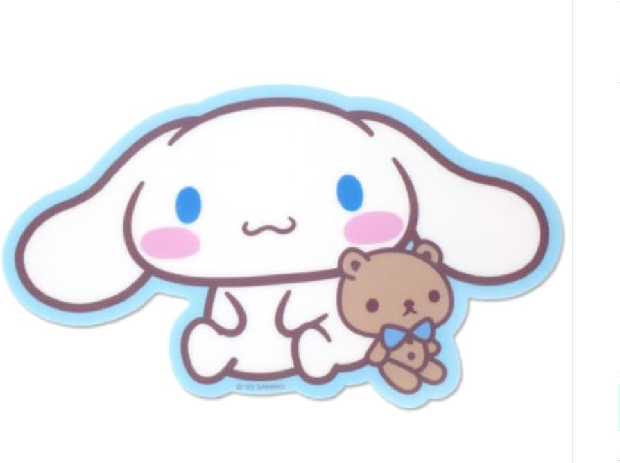

Go back to Sanrio World
CINNAMOROLL

TOP FIVE FACTS
- Cinnamoroll is widely considered the cutest and most popular Sanrio character, holding the top spot in global rankings from 2020 to 2024 due to his adorable puppy appearance.
- Cinnamoroll is a popular Sanrio character (debuted 2002) designed by Miyuki Okumura
- Despite his cute appearance, Cinnamoroll is male.
- By 2004, Cinnamoroll merchandise accounted for 25% of Sanrio's sales, leading to the development of related projects like Cinnamoangels and Lloromannic, showcasing his significant impact.
- Cinnamoroll is a lovable, fluffy white puppy with a tail resembling a cinnamon roll.